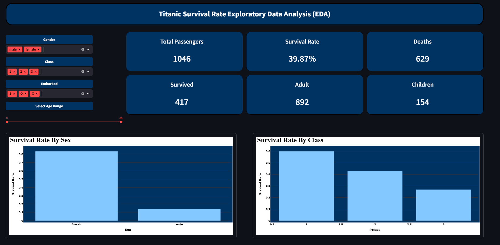

Performed EDA 1,046 Titanic passengers,revealing that gender, ticket class, and fare paid were the three strongest predictors of survival with females and 1st class passengers showing the highest survival rates.
Conducted an Exploratory Data Analysis (EDA) on the Titanic passenger dataset to uncover the key factors that determined survival. Working with 1,046 passenger records, the analysis examined the relationship between survival outcomes and variables including gender, ticket class, age, fare paid, and embarkation port. The project involved cleaning and preprocessing raw passenger data, engineering relevant features, and building an interactive dashboard with dynamic filters that allow users to slice the data by gender, class, embarkation point, and age range in real time. Key findings revealed that survival was not random, it was heavily influenced by socioeconomic status and gender. First class passengers survived at nearly double the rate of third class passengers, females survived at a drastically higher rate than males, and higher fares strongly correlated with survival probability. Of the 1,046 passengers analyzed, only 417 survived, a 39.87% survival rate with 629 deaths recorded. The dashboard visualizes these patterns across four charts: Survival Rate by Sex, Survival Rate by Class, Age Distribution by Survival, and Fare vs Survival, giving stakeholders a clear, data-driven picture of what determined life or death on the Titanic.
The Titanic disaster of 1912 claimed 1,517 lives, yet survival was far from equal. Historical records suggest that factors beyond pure chance including gender, socioeconomic class, age, and fare paid played a significant role in determining who lived and who died. However, without structured analysis, these patterns remain buried in raw passenger data and cannot be used to draw meaningful conclusions. The challenge was to move beyond surface-level observation and apply data analytics to answer a precise question: what passenger characteristics most strongly predicted survival, and by how much? Existing accounts of the disaster rely heavily on narrative and anecdote. This project replaces assumption with evidence, using exploratory data analysis and interactive visualization to quantify exactly how much gender, class, and fare influenced survival outcomes across 1,046 passengers. The result is not just an analysis of a historical event. It is a demonstration of how raw, unstructured data can be transformed into clear, evidence-based insight, the same skill applied in any business context where decisions need to move from gut feeling to data-driven fact.
This analysis transforms a well known historical dataset into a clear demonstration of analytical thinking and business relevant storytelling. By quantifying survival patterns across 1,046 passengers, the project proves that socioeconomic status and gender were not just contributing factors but decisive ones. First class passengers and female passengers did not simply fare better by chance. The data shows a structured, measurable pattern that holds across every filter applied including age range, embarkation port, and fare bracket. For recruiters and hiring managers, this project signals three things. First, the ability to take raw, messy data and extract a coherent narrative. Second, the ability to build an interactive tool that allows non-technical stakeholders to explore findings without needing to understand the underlying analysis. Third, the ability to connect historical or abstract data to conclusions that actually mean something in a business context. The interactive dashboard with filters for gender, class, age and embarkation port means the findings are not static. Any stakeholder can interrogate the data themselves, test their assumptions, and arrive at conclusions grounded in evidence rather than opinion. In a business setting, this same approach applied to customer data, sales records, or operational metrics would give decision makers the same clarity this dashboard gives on Titanic survival. That transferability is the real impact.

View Live Dashboard